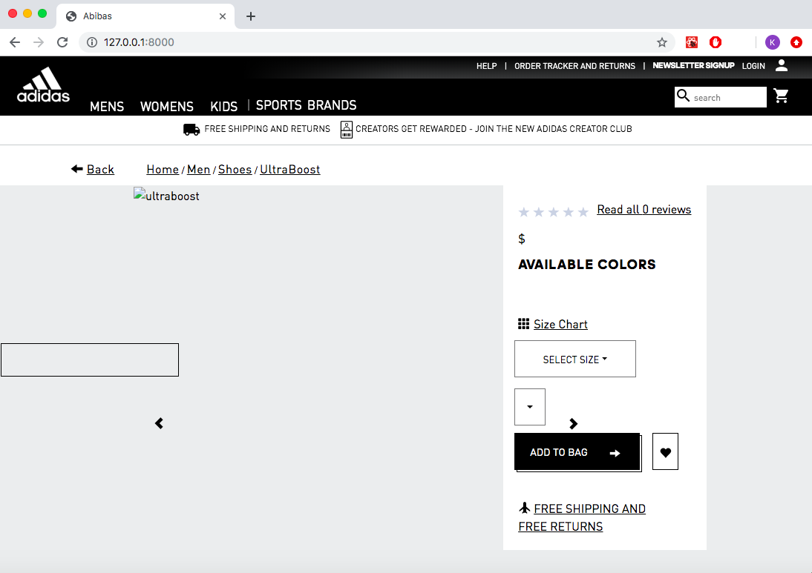

Abibas
An ecommerce web application for athletic appearal


At Abibas, I worked on a team of three remote engineers. Our goal for this project was to recreate a popular ecommerce website (Adidas), with a focus on the backend and performance of the website. The tech stack used for Abibas was JavaScript, React, Node express, and PostgreSQL. The component which I was primarily responsible for is the reviews and ratings section seen in the bottom image to the left. In addition, I implemented a seeding script to load my database with ten million records in under 10 minutes. I also optimized queries and constructed a redis cache in order to achieve a 10X faster response time. Abibas was deployed using an AWS ec2 instance.